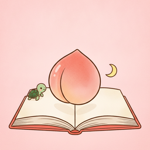

うごく むかしばなし
めくって、さわって、うごく むかしばなしの えほん
「ももたろう」「うらしまたろう」「かぐやひめ」の3つのお話が入った、小さなお子さま向けの絵本アプリです。
よくある質問
- 次のページに進めません
- 桃を切る、鬼を倒すなど、さわって進めるページがあります。ピンク色の案内に従って絵をタップしてください。やり直したいときは、画面下の丸い矢印のボタンを押すと最初からできます。
- お話の途中で本棚に戻りたい
- 画面下の家のボタンを押すと本棚に戻ります。
- インターネットにつながっていなくても使えますか
- はい。すべてアプリの中に入っているので、機内モードでも読めます。
お問い合わせ
不具合やご意見は sk99sw.yt.ots@gmail.com までお送りください。